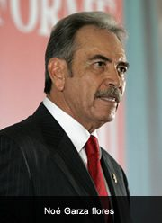

Noé Fernando Garza Flores
| Noé Fernando Garza Flores | |
|---|---|
 Retrato | |
| Descripción | Diputado federal · Secretario de Desarrollo Rural de Coahuila · Rama Garza Flores |
| Fechas / lugar | 1948 – |
| Línea familiar | Garza García |
Noé Fernando Garza Flores (1948 –) — Ingeniero agropecuario y zootecnista coahuilense (n. 31 may 1948). Diputado federal (LXI Legislatura) y secretario de Desarrollo Rural de Coahuila (2011–2015). Tradición familiar lo sitúa como tío de Santos Javier Garza García; filiación por actas pendiente.
Contenido
Noé Fernando Garza Flores nació el 31 de mayo de 1948. Su formación es en agropecuaria y zootecnia (maestría). La rama que lleva es Garza Flores: apellido paterno Garza y materno Flores, emparentada en la tradición oral con los Garza García del norte de Nuevo León.
Rama y parentesco[editar]
En el museo se le coloca en la sala Garza García por el vínculo familiar que la tradición señala con Santos Javier Garza García (alcalde de Anáhuac 2009–2012): tío de Santos. Hasta incorporar actas civiles o eclesiásticas al archivo, ese parentesco queda como tradición familiar pendiente de prueba documental; no se afirma filiación directa sin documento.
Trayectoria administrativa y legislativa[editar]
Su carrera pública, según el perfil del Sistema de Información Legislativa (SIL) de la Secretaría de Gobernación, recorre instituciones del campo y la reforma agraria antes de llegar al Congreso de la Unión y a la Secretaría de Desarrollo Rural de Coahuila.
- 1973–1977 Subdelegado de organismos y desarrollo agrario (DAAC–Secretaría de la Reforma Agraria).
- 1977–1983 Delegado regional de la SRA en Coahuila.
- 1983–1984 Subgerente general de BANRURAL Centro-Norte.
- 1984–1986 Director general de la Comisión Nacional de Zonas Áridas (CONAZA).
- 1998–1999 Coordinador general de programas interinstitucionales de la Procuraduría Agraria.
- 2009–2012 Diputado federal (LXI Legislatura, representación proporcional, circunscripción segunda / Coahuila); tomó protesta el 2 de febrero de 2010 como suplente de la diputada Hilda Esthela Flores Escalera.
- 2011–2015 Secretario de Desarrollo Rural del Gobierno del Estado de Coahuila (administración Rubén Moreira Valdez). Figura como titular en el Programa Estatal de Desarrollo Rural 2011–2017 (publicado sept. 2012).
- 2015 Deja la secretaría; renuncia a la militancia del PRI tras décadas en el partido.
- 2017 Anunció aspiración a la gubernatura de Coahuila por la vía independiente; no se registró formalmente.
- 2019 Nombrado director general de la Corporación para el Desarrollo de la Zona Fronteriza de Nuevo León (Codefront) durante el gobierno de Jaime Rodríguez Calderón.
Lugar en el museo[editar]
Se incluye entre los hombres ilustres de la sala Garza García / García Garza por su trayectoria pública en el noreste y por el vínculo familiar declarado con Santos Javier Garza García. El archivo prioriza cargos y fechas verificables en fuentes oficiales; la cadena genealógica completa se actualizará cuando entren actas al expediente.
Retrato aportado al archivo familiar (uso editorial del museo). Nombre completo según SIL: Noé Fernando Garza Flores.
Fuentes[editar]
- SIL — Perfil legislador Dip. Noé Fernando Garza Flores (Referencia 6909906)
- Gobierno de Coahuila — Programa Estatal de Desarrollo Rural 2011–2017 (portada: Noé F. Garza Flores, Secretario)
- Coahuila Transparente — Directorio: Ing. Noé Fernando Garza Flores, Secretario de Desarrollo Rural
- Ficha relacionada — Santos Javier Garza García
Referencias[editar]
- «Noé Fernando Garza Flores», Genealogía Sefardí — investigación Sefarad-MX, genealogiasefardi.site/biografias/noe-fernando-garza-flores.